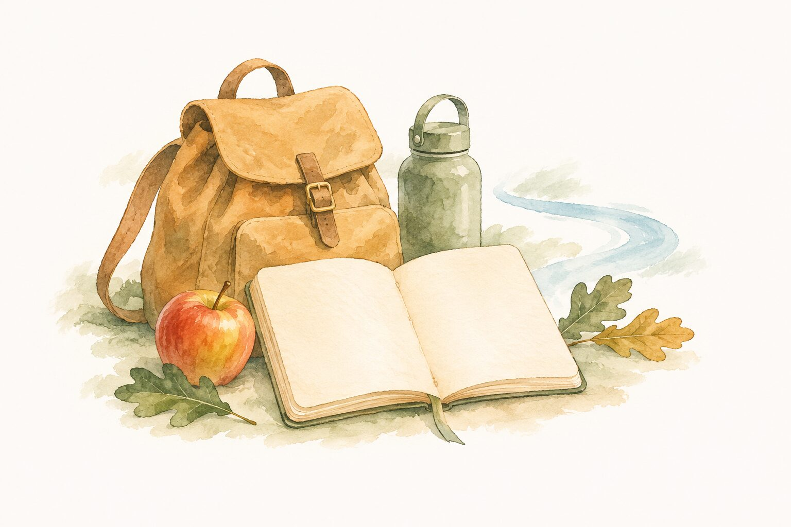

À composer à votre rythme
Mon séjour à Ceilhes
Vos sorties, vos rencontres et vos bonnes adresses, réunies au même endroit.
Sur les fiches, choisissez « Ajouter à mon séjour ». Votre sélection reste dans ce navigateur, sans compte. Partagez un lien pour la retrouver sur un autre appareil ou transmettre vos idées à vos proches. Vous choisissez ensuite les idées à ajouter : aucun carnet existant n’est remplacé. Retrouvez aussi nos quatre programmes de séjour.
Un carnet dans votre navigateur
JavaScript est nécessaire pour retrouver et modifier votre sélection. Les programmes de séjour, les randonnées et les bonnes adresses restent consultables et imprimables sans cette fonction.
Votre séjour commence ici
Gardez une balade, un producteur ou une adresse qui vous plaît. Vous retrouverez votre sélection sur cette page.

Un lien à partager
Ce lien contient les références publiques de vos idées, sans nom, adresse ni autre information personnelle. Toute personne qui le reçoit peut consulter cette sélection.
Retrouver un carnet reçu
Ouvrez un lien partagé ou choisissez un fichier de carnet précédemment exporté. Les idées reconnues sont présentées avant leur ajout à votre sélection.
Carnet reçu
Le bouton « Emporter hors ligne » télécharge une copie autonome de votre liste : elle reste lisible sans réseau, mais ouvrir les fiches et vérifier leurs informations demande une connexion. Ce carnet garde vos idées, sans effectuer de réservation. Avant votre départ, vérifiez les ouvertures, les dates des événements et les conditions d'accès sur les fiches d'origine.